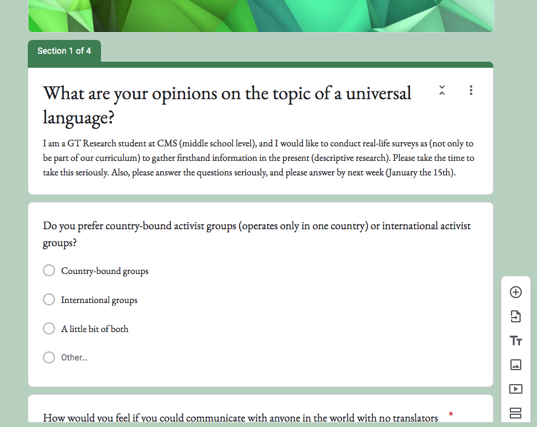

For your convenience, a menu has been placed here.
Created by Charles Wang
I created a survey to ask different open-ended and close-ended questions about a universal language. I made it so that it customized to the responder's responses, and soon after it was done I sent it to many activist groups that went international. Unfortunately, I did not recieve any responses, except for one empty response. I revised, but I did not recieve any responses.
How do international groups feel about a universal language that was initiated today?
I am doing descriptive research because a real controversial topic requires present information, not opinions from the past (historical), or actual experiments because it is not tangible (experimental). My selection process was through identifying a specific group that would fit a goal internationally, and then writing questions targeted at the group so that they made sense.
By making this survey, I intend to prove a point that sometimes language barriers can be annoying. Also, I really want a real sample of the population for a few questions, like “As a child, did you find things in common with other people who spoke your second language?”. There wasn’t a lot of information on these aspects. Finally, I predict that about 90% would say yes.